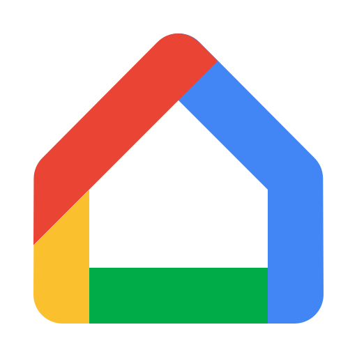

Guia de Instalação Rápida
Siga os passos abaixo para conectar o seu Módulo GateOS Home ao motor e aos assistentes de voz.
Conexão Física no Motor
Desligue a energia do motor. Ligue os fios de contato do Módulo GateOS na saída botoeira (geralmente marcada como BOT e GND na placa do seu portão). Em seguida, conecte a fonte de alimentação 5V na tomada.
Gerar Chaves no Sinric Pro
O Sinric Pro é a ponte entre o seu módulo e a Alexa/Google. Crie uma conta gratuita em sinric.pro.
- Vá em Devices e clique em Add Device.
- Dê o nome de "Portão", selecione o tipo Switch e salve.
- Copie e guarde os três códigos gerados:
App Key,App SecreteDevice ID.
Configurar a Placa GateOS
Pegue o seu celular, vá nas configurações de Wi-Fi e conecte-se à rede chamada GateOS (Senha: 12345678). Uma tela de configuração abrirá automaticamente.
- Preencha o seu melhor E-mail (ele servirá para a sua Garantia).
- Selecione a sua rede Wi-Fi residencial e digite a senha.
- Cole as chaves do Sinric Pro copiadas no passo anterior e clique em "Ligar e Configurar".

Vincular Assistente de Voz
Abra o aplicativo da Alexa ou Google Home no seu celular. Vá na sessão de "Adicionar Dispositivo" ou "Skills", procure por Sinric Pro e faça o login com a sua conta criada no Passo 2. O portão aparecerá automaticamente no seu painel!